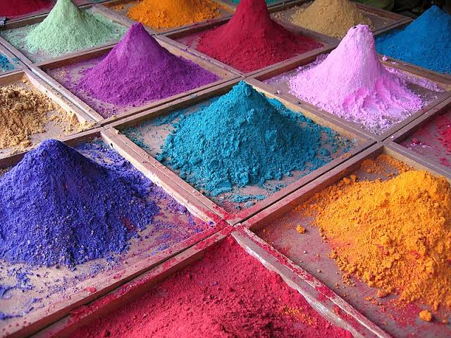

CASO CURIOSO #1:
El Secreto de los Pigmentos Naturales

¿Por qué las pinturas del renacimiento cambiaban de color?
Durante los siglos XV y XVI, los grandes maestros de la pintura no contaban con pigmentos sintéticos ni tubos de pintura industriales. Cada artista o su aprendiz debía moler minerales, piedras semipreciosas como el lapislázuli, y resinas vegetales en el propio taller para mezclar con aceite de linaza.
Con el paso de las décadas, la reacción química del aceite expuesto al aire y a la luz UV provocaba que colores como el azul ultramar o los verdes resinosos mutaran gradualmente, otorgándole a las obras una pátina única y viva que evolucionaba con el tiempo.
Rescate de la técnica en los talleres contemporáneos
En la actualidad, diversos artistas independientes que colaboran con AtelierStudio han vuelto a elaborar sus propios óleos a partir de tierras naturales y pigmentos orgánicos no tóxicos. Esta búsqueda busca recuperar la textura, la durabilidad y el alma artesanal que la producción masiva ha perdido.
Adquirir una obra elaborada con pigmentos orgánicos no es solo comprar una pieza decorativa; es llevar a tu hogar una pieza viva que continuará madurando con el paso de los años.